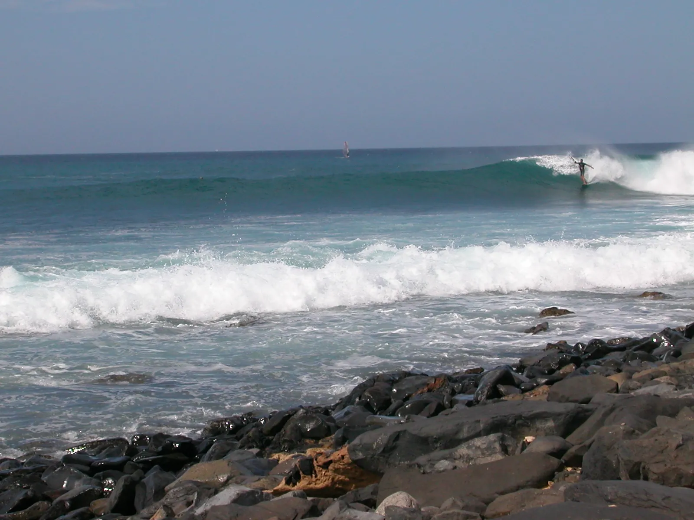

Ponta Preta
Sal, Cap-Vert · surf, windsurf

Droite puissante sur récif, célèbre pour ses sessions de windsurf dans les vagues. Réservée aux pratiquants expérimentés.
- Lieu
- Sal, Cap-Vert
- Niveau
- Expert
- Activités
- surf, windsurf
- Type d'eau
- Mer / océan
- Coordonnées
- 16.60, -22.93 (position approximative du secteur)
Dangers à connaître
- Vague puissante sur récif.
- Fond de lave coupant.
Le conseil d'Ocean Buddy
Observe longtemps avant d’entrer : la vague est rapide et le récif peu profond.
Ouvrir dans Ocean Buddy Télécharger sur l'App Store
Source : Fiche Ocean Buddy · septembre 2026 · à vérifier localement.